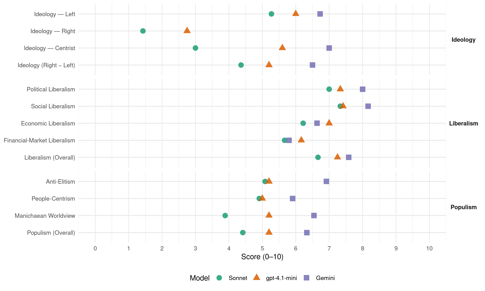

SDSM (North Macedonia, 2016)
manifesto_id 89221_201612
Get full text: This site shows derived annotations and short verbatim quotes only. The full manifesto text is © Manifesto Project / WZB — obtain it via manifesto-project.wzb.eu using the manifesto_id above.
Headline scores
| Dimension | Sonnet | gpt-4.1-mini | Gemini |
|---|---|---|---|
| Populism (Overall) | 4.4 | 5.2 | 6.3 |
| Anti-Elitism | 5.1 | 5.2 | 6.9 |
| People-Centrism | 4.9 | 5.0 | 5.9 |
| Manichaean Worldview | 3.9 | 5.2 | 6.5 |
| Ideology (Right − Left) | 4.4 | 5.2 | 6.5 |
| Liberalism (Overall) | 6.7 | 7.2 | 7.6 |
| Political Liberalism | 7.0 | 7.3 | 8.0 |
| Social Liberalism | 7.3 | 7.4 | 8.2 |
| Economic Liberalism | 6.2 | 7.0 | 6.6 |
| Financial-Market Liberalism | 5.7 | 6.2 | 5.8 |
Evidence per dimension
Economic Liberalism
Gemini · score 6.0 · verified · chunk 1
“отворање фирма со само 1 евро основачки капитал”
Ќе овозможиме отворање фирма со само 1 евро основачки капитал. Ќе овозможиме исто така кредити
Gemini · score 6.0 · verified · chunk 2
“нема да ја промениме постојната единствена стапка од 10% кај данокот на добивка”
НЕМА ДА ИМА ПРОМЕНА НА СТАПКАТА НА ДАНОКОТ НА ДОБИВКА Инвеститорите и бизнисот бараат предвидливост и стабилност на законите и деловното окружување. Затоа нема да ја промениме постојната единствена стапка од 10% кај данокот на добивка.
Gemini · score 8.0 · verified · chunk 3
“го поддржуваме приватниот сектор како носител”
еднакви можности за сите. А. Го поддржуваме приватниот сектор како носител на економскиот развој УНАПРЕДУВАЊЕ НА ДЕЛОВНОТО ОКРУЖУВАЊЕ И ИНСТИТУЦИОНАЛНАТА
Gemini · score 8.0 · verified · chunk 4
“Либерализација на цените на течните горива”
Либерализација на цените на течните горива Ќе обезбедиме поголема ценовна конкурентност
Gemini · score 4.0 · mixed · chunk 5
“еднакви услови за странски и домашни инвеститори”
капацитети Ќе овозможиме еднакви услови за странски и домашни инвеститори. Ќе поттикнуваме изградба
Gemini · score 6.0 · verified · chunk 6
“ослободување од данок на добивка до”
поттикнеме работодавачите да соработуваат, да инвестираат и да учествуваат во активностите на образованието и обуката. Во таа насока е и мерката за ослободување од данок на добивка до 30% за вложување во развој на образование.
Gemini · score 7.0 · verified · chunk 7
“стимулирање јавно-приватни партнерства”
Европска и Светска банка за стимулирање јавно-приватни партнерства, како и средства од санкциите
Gemini · score 8.0 · verified · chunk 8
“намалиме данокот на добивка за информатика”
Ќе го намалиме данокот на добивка за информатика и информациони технологии на 5%.
Gemini · score 7.0 · verified · chunk 9
“гаранција на приватната сопственост”
најважно од сè, НАТО и ЕУ се гаранција на приватната сопственост, слободата и независноста
Gemini · score 6.0 · verified · chunk 10
“спречување на нелојалната конкуренција”
контрола на производите кои се увезуваат, заради спречување на нелојалната конкуренција и спречување
Gemini · score 6.0 · verified · chunk 11
“стратешка соработка со приватниот сектор”
Средното стручно образование ќе го преструктуираме, пред сè, преку стратешка соработка со приватниот сектор. На тој начин и компаниите може да
Gemini · score 5.0 · verified · chunk 12
“ослободиме од плаќање данок”
и исполнуваат условите за паушално оданочување, ќе ги ослободиме од плаќање данок.
gpt-4.1-mini · score 7.0 · verified · chunk 1
“Ќе ги поддржиме домашните фирми НОВИ РАБОТНИ МЕСТА ВО ДОМАШНИТЕ ФИРМИ Испланиравме 140 милиони евра за поддршка на домашните фирми.”
Ќе ги поддржиме домашните фирми НОВИ РАБОТНИ МЕСТА ВО ДОМАШНИТЕ ФИРМИ Испланиравме 140 милиони евра за поддршка на домашните фирми. Обезбедуваме голема државна поддршка за сите микро, мали и средни претпријатија за да го постигнеме тоа што на што се обврзуваме, повисоки плати и нови работни места.
gpt-4.1-mini · score 7.0 · verified · chunk 2
“Ќе воведеме поправеден персонален данок на доход”
Ќе воведеме поправеден персонален данок на доход со две стапки (10% и 18%) што ќе содржи и враќање на платениот персонален данок на доход за граѓаните кои имаат многу ниски месечни лични доходи.
gpt-4.1-mini · score 7.0 · verified · chunk 3
“поддршка за сите домашни претпријатија коишто инвестираат, отвораат работни места, извезуваат”
…Обезбедуваме поддршка за сите домашни претпријатија коишто инвестираат, отвораат работни места, извезуваат или создаваат повисока додадена вредност. Со цел да влијаеме на пораст на платите преку зголемувањето на продуктивноста на трудот…
gpt-4.1-mini · score 7.0 · verified · chunk 4
“конкурентност на земјоделските производи”
Примарна задача на земјоделско-прехранбениот сектор во Македонија е зголемување на земјоделските површини и на приносот и квалитетот на земјоделските производи.
gpt-4.1-mini · score 7.0 · verified · chunk 5
“пазарот на трудот”
…Мерките за поттикнување на домашните претпријатија и јавните инвестиции ќе обезбедат отворање на нови работни места. Притоа, со активните мерки за вработување директно ќе поттикнеме вработување на повеќе десетици илјади лица и ќе воведеме програма за вработување на млади која постои во земјите од ЕУ. Во рамките на политиката за вработување државата треба да ги коригира пазарните неправилности. Нема да дозволиме експлоатација на работниците и кршење на нивните права. Системот за безбедност и здравје при работа ќе биде во согласност со европското законодавство, со цел да се овозможат побезбедни и похумани услови на работните места….
gpt-4.1-mini · score 7.0 · verified · chunk 6
“ќе го олесниме пристапот до пазар на труд за социјално ранливи категории”
Ќе го усвоиме законот за социјално претприемништво преку кој ќе го олесниме пристапот до пазар на труд за социјално ранливи категории на граѓани. Социјалните претпријатија ќе нудат можност на ранливите групи да управуваат со претпријатието.
gpt-4.1-mini · score 6.0 · verified · chunk 7
“Поддршка на приватниот сектор за постигнување на поставените стандарди во заштитата на животната средина”
Некорумпирани институции, со капацитет да го спроведуваат законодавството за заштита на животната средина и природата; Засилен Инспекторат за животна средина со високообразован и дополнително стручно едуциран кадар, дополнет и со соодветна опрема; Поддршка на приватниот сектор за постигнување на поставените стандарди во заштитата на животната средина; Царински олеснување при увоз на нова технолошка опрема или инсталација на системи за пречистување на отпадните гасови или отпадните води;
gpt-4.1-mini · score 7.0 · verified · chunk 8
“намалување на данокот на добивка за информатика и информациони технологии”
Ќе го намалиме данокот на добивка за информатика и информациони технологии на 5%. На одреден период ќе го намалиме ДДВ-то за добра продадени преку е-трговија. Примената на ваквата мерка ќе донесе забрзан раст на бројот на продавници за е-трговија и зголемен број на корисници кои ќе купуваат на овој начин.
gpt-4.1-mini · score 7.0 · verified · chunk 9
“Ќе ги помогнеме и настапот на македонските градежници во странство”
Ќе помогнеме на сите компании од Република Македонија во нивниот настап во странство, со цел македонските производи да се наметнат на европските и светските пазари. Ќе ги помогнеме и настапот на македонските градежници во странство.
gpt-4.1-mini · score 8.0 · verified · chunk 10
“Ќе воведеме поправеден персонален данок на доход”
Ќе воведеме поправеден персонален данок на доход (дополнителната стапка ќе бида само за граѓаните во највисоките 5% од доходот); ќе ја укинеме максималната горна граница за плаќање на придонесите на плати; ќе воведеме повисок данок на имот за најбогатите и повисока стапка на акциза за луксузни возила.
gpt-4.1-mini · score 7.0 · verified · chunk 11
“ќе поддржиме заеднички технолошки проекти на претпријатија”
Ќе поддржиме заеднички технолошки проекти на претпријатија со различна дејност, како и заеднички настап на странски пазари на претпријатијата што се во однос добавувач-купувач.
gpt-4.1-mini · score 7.0 · verified · chunk 12
“Ќе го укинеме персоналниот данок за приходи остварени од земјоделска дејност”
Ќе го укинеме персоналниот данок за приходи остварени од земјоделска дејност. Со сегашната даночна политика, повеќето земјоделци го плаќаат овој данок што често пати изнесува повеќе од доделените субвенции.
Sonnet · score 5.0 · mixed · chunk 1
“државна поддршка за сите микро, мали и средни претпријатија”
Обезбедуваме голема државна поддршка за сите микро, мали и средни претпријатија за да го постигнеме тоа на што се обврзуваме
Sonnet · score 6.0 · verified · chunk 2
“нема да ја промениме постојната единствена стапка”
Инвеститорите и бизнисот бараат предвидливост и стабилност на законите и деловното окружување. Затоа нема да ја промениме постојната единствена стапка од 10% кај данокот на добивка.
Sonnet · score 6.0 · mixed · chunk 3
“поддршка на домашните претпријатија, раст на продуктивноста”
Нашиот модел на развој се базира врз поддршка на домашните претпријатија, раст на продуктивноста и долгорочни инвестиции. За нас странските инвестиции се дополнување на домашните, но не и нивна замена.
Sonnet · score 7.0 · verified · chunk 4
“Либерализација на цените на течните горива”
Либерализација на цените на течните горива Ќе обезбедиме поголема ценовна конкурентност во снабдувањето на течни горива на домашниот пазар со што ќе овозможиме и пониски цени за граѓаните
Sonnet · score 6.0 · verified · chunk 5
“еднакви услови за странски и домашни инвеститори”
Ќе овозможиме еднакви услови за странски и домашни инвеститори. Ќе поттикнуваме изградба на преработувачки капацитети
Sonnet · score 6.0 · verified · chunk 6
“ослободување од данок на добивка до 30%”
мерката за ослободување од данок на добивка до 30% за вложување во развој на образование
Sonnet · score 6.0 · verified · chunk 7
“Либерализирање на мрежата, односно одземање на правото на Министерот да дава дозвола”
Либерализирање на мрежата, односно одземање на правото на Министерот да дава дозвола за отварање и на Фондот да одлучува дали ќе потпише договор со ординација која што ги има исполнето условите
Sonnet · score 6.0 · verified · chunk 8
“Ќе го намалиме данокот на добивка за информатика”
Ќе го намалиме данокот на добивка за информатика и информациони технологии на 5%
Sonnet · score 6.0 · verified · chunk 9
“нови инвестициии, слободно движење”
Членството во НАТО и во ЕУ значи и подобар стандард, модерни закони, поголеми плати, безбедност (сигурност), отворени граници, нови инвестициии, слободно движење
Sonnet · score 6.0 · mixed · chunk 10
“ќе ја прекинеме праксата на фаворизирање”
ќе ја прекинеме праксата на фаворизирање на едни исти компании кои ја гушат конкуренцијата, преку политичко фаворизирање
Sonnet · score 7.0 · verified · chunk 11
“Целосно ќе ги укинеме давачките при увоз на опрема”
Целосно ќе ги укинеме давачките при увоз на опрема наменета за нови проекти, за проекти што ангажираат работна сила во недоволно развиени општини
Sonnet · score 6.0 · verified · chunk 12
“ќе се влијае и врз развојот и подобрувањето на конкурентноста на земјоделието”
покрај зголемувањето на праведноста, ќе се влијае и врз развојот и подобрувањето на конкурентноста на земјоделието
Financial-Market Liberalism
Gemini · score 7.0 · verified · chunk 3
“дијалогот помеѓу малите и средни претпријатија и кредитните институции”
Кредитен правобранител, кој треба да го подобри дијалогот помеѓу малите и средни претпријатија и кредитните институции. Кредитниот правобранител треба да обезбеди фер
Gemini · score 7.0 · verified · chunk 4
“кредитите подигнати од комерцијалните банки наменети”
висина од 50% од каматите за кредитите подигнати од комерцијалните банки наменети за планираната инвестиција.
Gemini · score 3.0 · verified · chunk 5
“кредитите подигнати од комерцијалните банки”
висина од 50% од каматите за кредитите подигнати од комерцијалните банки наменети за планираната
Gemini · score 6.0 · verified · chunk 10
“намалување на каматната стапка”
Европската инвестициона банка. Ќе овозможиме намалување на каматната стапка на кредитната линија
Gemini · score 6.0 · verified · chunk 11
“Македонската банка за поддршка на развојот”
рок од 10 години во кој постепено би излегувала од овој фонд (би ги продавала своите удели). Македонската банка за поддршка на развојот (МБРП) ќе се докапитализира со цел
gpt-4.1-mini · score 5.0 · verified · chunk 2
“Ќе го поттикнеме проактивниот однос во делот на истрагите за перење пари”
Ќе го поттикнеме проактивниот однос во делот на истрагите за перење пари и финансискиот криминал. Кадровски ќе ги екипираме институциите надлежни за справување со економско-финансискиот криминал и ќе го поттикнеме системското користење на финансиските истраги.
gpt-4.1-mini · score 6.0 · verified · chunk 3
“ќе се основа гарантна шема преку МБПР за два поединечни производа”
…За таа цел треба да се основа гарантна шема преку МБПР за два поединечни производа, според следниве параметри: Инвестициски кредит: За секоја МСП компанија која може да обезбеди 15% сопствено учество…
gpt-4.1-mini · score 6.0 · verified · chunk 4
“прозрачноста на трошењето на овие средства”
Финансиите од регистрација на возила и од наплатата на патарини ќе се користат за одржување на патиштата и инвестиции во патната инфраструктура. Ќе бидеме транспарентни во трошењето на овие средства.
gpt-4.1-mini · score 6.0 · verified · chunk 9
“Ќе го објавиме точниот износ на изгубени (неискористени) средства од фондовите на ЕУ”
Ќе го објавиме точниот износ на изгубени (неискористени) средства од фондовите на ЕУ и со тоа ќе го отвориме процесот на зголемена транспарентност во нивното раководење и искористување.
gpt-4.1-mini · score 7.0 · verified · chunk 10
“Ќе формираме „Фискален совет“, како независен орган формиран од страна на Собранието”
Ќе формираме „Фискален совет“, како независен орган формиран од страна на Собранието на Република Македонија, во којшто ќе членуваат истакнати експерти по финансии или економија, со мисија да го оцени кредибилитетот на фискалната политика и да обезбеди нејзина транспарентност и предвидливост.
gpt-4.1-mini · score 7.0 · verified · chunk 12
“Ќе воведеме систем на консултации при подготовката на преговарачки позиции, како и во тек на преговорите”
Ќе воведеме систем на консултации при подготовката на преговарачки позиции, како и во тек на преговорите. Ќе ги преговараме поглавјата 23 и 24 (судство и темелни права и правда, слобода и безбедност), но, исто така, ќе успееме да отвориме и други.
Sonnet · score 6.0 · verified · chunk 1
“кредити до 15.000 евра со само 1 процент годишна камата”
Ќе овозможиме исто така кредити до 15.000 евра со само 1 процент годишна камата, за отворање микро бизнис.
Sonnet · score 6.0 · verified · chunk 2
“истрагите за перење пари и финансискиот криминал”
Ќе го поттикнеме проактивниот однос во делот на истрагите за перење пари и финансискиот криминал.
Sonnet · score 6.0 · verified · chunk 3
“достапност до финансии, формирање мрежи и кластери”
ќе бидат употребувани во систем на мерки и решенија во делот на започнување бизнис, советодавна помош, достапност до финансии, формирање мрежи и кластери, подобро поврзување на домашни со странски инвеститори
Sonnet · score 6.0 · verified · chunk 4
“национална и регионална берза за струја”
Ќе ја интензивираме подготовката за воведување на национална и регионална берза за струја, во соработка со странски партнер со компаративна предност во областа (пр. Нордпул)
Sonnet · score 5.0 · verified · chunk 5
“банкарска гаранција за планираниот откуп”
Во законот ќе се воведе обврска за банкарска гаранција за планираниот откуп на земјоделски производи
Sonnet · score 6.0 · verified · chunk 7
“транспарентна и интернационално потврдена методологија за формирање на единствените цени на лековите”
Воведување на објективна, транспарентна и интернационално потврдена методологија за формирање на единствените цени на лековите во Република Македонија.
Sonnet · score 5.0 · verified · chunk 8
“транспарентност во информирањето за финансиското работење”
Ќе се обезбеди транспарентност во информирањето за финансиското работење
Sonnet · score 6.0 · verified · chunk 11
“Македонската банка за поддршка на развојот ќе се докапитализира”
Македонската банка за поддршка на развојот (МБРП) ќе се докапитализира со цел да се зголеми кредитната поддршка и нејзината способност за реализација на гарантна шема.
Sonnet · score 5.0 · verified · chunk 12
“платформа за преговори за обезбедување на долгорочни извори на финансиски средства”
Ќе подготвиме платформа за преговори за обезбедување на долгорочни извори на финансиски средства за реализација на Програмата за јавни инвестиции со Светската банка, Европската инвестициона банка, ЕБРД
Political Liberalism
Gemini · score 9.0 · verified · chunk 1
“Независно, департизирано судство; Ефикасна судска заштита”
НАШИТЕ СЕЛИ: Независно, департизирано судство; Ефикасна судска заштита за сите; Правда достапна до сите
Gemini · score 9.0 · verified · chunk 2
“судството столб на демократијата и владеењето на правото”
ќе го направиме судството столб на демократијата и владеењето на правото во Република Македонија.
Gemini · score 8.0 · verified · chunk 3
“унапредување на независноста на институциите”
можност државните институции да ги уценуваат фирмите. Ќе се залагаме за унапредување на независноста на институциите и за зголемување на транспарентноста во нивното работење
Gemini · score 8.0 · verified · chunk 4
“независни и професионални институции, високо ниво”
промоција на поволно и стабилно деловно опкружување, независни и професионални институции, високо ниво на демократска свест, ефикасен правен систем
Gemini · score 7.0 · verified · chunk 5
“Автономијата на универзитетите е целосно нарушена”
наставниците и професорите. Автономијата на универзитетите е целосно нарушена, а дисперзираните студии
Gemini · score 8.0 · verified · chunk 6
“уставно загарантираната универзитетска автономија, академската”
со дерегулација на високото образование, ќе ги вратиме и безрезервно ќе ги почитуваме уставно загарантираната универзитетска автономија, академската слобода, достоинството и угледот
Gemini · score 8.0 · verified · chunk 7
“некорумпирана, непристрасна и едуцирана администрација”
стандардите за квалитет. Ќе обезбедиме некорумпирана, непристрасна и едуцирана администрација, која ќе биде во служба
Gemini · score 8.0 · verified · chunk 8
“ги суспендира уставноста и правната држава”
не ја оштетува само нашата физичка стварност, туку ги суспендира уставноста и правната држава, ги урива вредносните системи
Gemini · score 8.0 · verified · chunk 9
“Враќање на слободата и демократските вредности”
НАШИТЕ ЦЕЛИ Враќање на слободата и демократските вредности во општеството, со што ќе престанат
Gemini · score 7.0 · verified · chunk 10
“легитимни и демократски избрани претставници”
овозможиме директно да учествуваат со свои легитимни и демократски избрани претставници во управувањето
Gemini · score 8.0 · verified · chunk 11
“ефикасно функционирање на правната држава”
овозможиме квалитетни истраги, одговорност за злоупотребите и ефикасно функционирање на правната држава. Ќе го продолжиме крајниот рок за
Gemini · score 8.0 · verified · chunk 12
“европските стандарди за човекови права”
квалитетна едукација на судиите во областа на европските стандарди за човекови права, чии резултати ќе бидат мерливи.
gpt-4.1-mini · score 7.0 · verified · chunk 1
“Ќе обезбедиме услови овие корективни механизми во општеството да се ослободат и вистински да ги заштитат човековите права и македонската демократија.”
Системот на одговорност не може вистински да функционира без силно Собрание, департизирана полиција, независно судство, слободни медиуми и силен граѓански сектор. Ќе обезбедиме услови овие корективни механизми во општеството да се ослободат и вистински да ги заштитат човековите права и македонската демократија.
gpt-4.1-mini · score 8.0 · verified · chunk 2
“Ќе воведеме редовна практика на јавни сослушувања”
Ќе воведеме редовна практика на јавни сослушувања (public hearings) во Собранието и отворени дебати во процесот на создавање, но и следење на јавните политики.
gpt-4.1-mini · score 7.0 · verified · chunk 3
“Ќе усвоиме единствена правна рамка што ги уредува сите форми на родово базирано насилство”
…Ќе усвоиме единствена правна рамка што ги уредува сите форми на родово базирано насилство, преку Закон за родово базирано насилство. На Македонија и требаат јасни и недвосмислени законски решенија…
gpt-4.1-mini · score 7.0 · verified · chunk 4
“ефикасен правен систем”
Нашата политика ќе се базира на промоција на поволно и стабилно деловно опкружување, независни и професионални институции, високо ниво на демократска свест, ефикасен правен систем, квалификувана работна сила, активна политика на поддршка на инвестиции и даночни олеснувања.
gpt-4.1-mini · score 6.0 · verified · chunk 5
“демократија”
…ќе ги зголемиме квотите за учество на жените во политиката со цел да се достигне сооднос 50:50 на вработени мажи и жени во 2020 година. Ќе имплементираме родова перспектива во креирање на политиките на национално и локално ниво. Ќе востановиме Секретаријат за родова рамноправност при Влада на Република Македонија, кој ќе се грижи за имплементација на родовата перспектива во креирање на политиките и буџетите на национално и локално ниво. Ќе водиме политика на родово сензитивен јазик и надминување на стереотипите во образованието. Во рамки на евалуацијата на учебниците во основното и средно образование, ќе го вклучиме и аспектот на родова рамноправност и родово сензитивен јазик. …
gpt-4.1-mini · score 8.0 · verified · chunk 6
“ќе ја вклучиме родовата перспектива во колективното договарање на сите нивоа”
Ќе ја вклучиме родовата перспектива во колективното договарање на сите нивоа, заради дополнително унапредување и заштита на жените работнички. Ќе воведеме целосна транспарентност на процесите за унапредување и развој на кариерата.
gpt-4.1-mini · score 7.0 · verified · chunk 7
“Стручност и компетентност на првите луѓе и независна и квалитетна администрација”
Работењето на Министерството за здравство и Фондот за здравствено осигурување ќе го подобриме преку: Стручност и компетентност на првите луѓе и независна и квалитетна администрација во нив. Позитивен одговор за лекување во странство за секој кој што има реална потреба од тоа во најкус можен рок, односно нема да се спречуваат пациенти да се лекуваат во странство заради развој на центри за одредени дијагнози, додека тие центри потполно не се развиени.
gpt-4.1-mini · score 7.0 · verified · chunk 8
“транспарентноста во работењето на владините институции”
ќе се подобри транспарентноста во работењето на владините институции преку целосна примена на концептот на отворена влада (Open Government). АВТОМАТИЗАЦИЈА НА ПРОЦЕСИТЕ ВО ЈАВНА АДМИНИСТРАЦИЈА Автоматизација на процесите во јавната администрација преку користење на ИКТ (идентификување, воспоставување и користење на основните регистри во реално време, имплементација на систем за интероперабилност).
gpt-4.1-mini · score 8.0 · verified · chunk 9
“Членството во НАТО и ЕУ се наши стратегиски определби”
Членството во НАТО и ЕУ се наши стратегиски определби. Без интеграција во ЕУ и во НАТО, државата нема иднина, особено кога сите други држави од регионот напредуваат, или веќе нè надминаа во тој правец.
gpt-4.1-mini · score 7.0 · verified · chunk 10
“Ќе воведеме законски обврски за поголемо учество на академскиот кадар и студентите во управувањето со државните универзитети”
Ќе воведеме законски обврски за поголемо учество на академскиот кадар и студентите во управувањето со државните универзитети. Ќе биде променето двојството со кое ректорите менаџираат и со Ректоратот и со Сенатот, како и двојството на управување и со факултетот и со наставничкиот совет на факултетот.
gpt-4.1-mini · score 8.0 · verified · chunk 11
“ќе предложиме пратениците да се избираат по принципот на отворени листи”
ќе предложиме пратениците да се избираат по принципот на отворени листи, а Република Македонија да биде една изборна единица. На тој начин, секој глас ќе вреди подеднакво, а граѓаните директно ќе ги избираат своите претставници.
gpt-4.1-mini · score 8.0 · verified · chunk 12
“ќе создадеме правна обврска јавниот обвинител на Република Македонија да се избира во согласност со опозицијата”
ПРАВДА СИГУРНОСТ КОНТРОЛА НА ВЛАСТА Ќе создадеме правна обврска јавниот обвинител на Република Македонија да се избира во согласност со опозицијата. Ќе иницираме уставни промени со кои ќе се намали бројот на пратеници во Собранието на Република Македонија.
Sonnet · score 7.0 · verified · chunk 1
“независно судство, објективни медиуми”
Чесни политичари не се плашат од независно судство, објективни медиуми, ниту од активни граѓани.
Sonnet · score 8.0 · verified · chunk 2
“столб на демократијата и владеењето на правото”
ќе го направиме судството столб на демократијата и владеењето на правото во Република Македонија
Sonnet · score 7.0 · verified · chunk 3
“независни и професионални институции”
Нашата политика ќе се базира на промоција на поволно и стабилно деловно опкружување, независни и професионални институции, високо ниво на демократска свест, ефикасен правен систем, квалификувана работна сила, активна политика на поддршка на инвестиции и даночни олеснувања.
Sonnet · score 7.0 · verified · chunk 4
“високо ниво на демократска свест, ефикасен правен систем”
Нашата политика ќе се базира на промоција на поволно и стабилно деловно опкружување, независни и професионални институции, високо ниво на демократска свест, ефикасен правен систем, квалификувана работна сила
Sonnet · score 5.0 · verified · chunk 5
“Автономијата на универзитетите е целосно нарушена”
Автономијата на универзитетите е целосно нарушена, а дисперзираните студии дополнително го срушија квалитетот на образованието
Sonnet · score 7.0 · verified · chunk 6
“автономијата на универзитетите е целосно нарушена”
Автономијата на универзитетите е целосно нарушена, а дисперзираните студии дополнително го срушија квалитетот на образованието
Sonnet · score 6.0 · verified · chunk 7
“транспарентност, отчетност, непристрасност и ефикасност”
Ќе се воведат нови стандарди на работење - транспарентност, отчетност, непристрасност и ефикасност на сите фактори во културниот систем, особено на националните и на другите јавни институции.
Sonnet · score 7.0 · verified · chunk 8
“ги суспендира уставноста и правната држава”
тој не ја оштетува само нашата физичка стварност, туку ги суспендира уставноста и правната држава, ги урива вредносните системи во културата
Sonnet · score 8.0 · verified · chunk 9
“партиски медиуми, партиски олигарси”
Членството во НАТО и во ЕУ не дозволува партиско судство и обвинителство, партиски медиуми, партиски олигарси
Sonnet · score 8.0 · verified · chunk 11
“ќе воведеме отворени листи за избор на советници”
Ќе предложиме измени во Изборниот законик со кои ќе воведеме отворени листи за избор на советници, а изборот на градоначалник ќе биде само во еден круг.
Sonnet · score 7.0 · verified · chunk 12
“јавниот обвинител на Република Македонија да се избира во согласност со опозицијата”
Ќе создадеме правна обврска јавниот обвинител на Република Македонија да се избира во согласност со опозицијата. Ќе иницираме уставни промени
Liberalism (Overall)
Gemini · score 8.0 · verified · chunk 1
“Независно, департизирано судство; Ефикасна судска заштита”
НАШИТЕ СЕЛИ: Независно, департизирано судство; Ефикасна судска заштита за сите; Правда достапна до сите
Gemini · score 8.0 · verified · chunk 2
“судството столб на демократијата и владеењето на правото”
ќе го направиме судството столб на демократијата и владеењето на правото во Република Македонија.
Gemini · score 8.0 · verified · chunk 3
“го поддржуваме приватниот сектор како носител”
еднакви можности за сите. А. Го поддржуваме приватниот сектор како носител на економскиот развој УНАПРЕДУВАЊЕ НА ДЕЛОВНОТО ОКРУЖУВАЊЕ И ИНСТИТУЦИОНАЛНАТА
Gemini · score 8.0 · verified · chunk 4
“Либерализација на цените на течните горива”
Либерализација на цените на течните горива Ќе обезбедиме поголема ценовна конкурентност
Gemini · score 6.0 · verified · chunk 5
“Автономијата на универзитетите е целосно нарушена”
наставниците и професорите. Автономијата на универзитетите е целосно нарушена, а дисперзираните студии
Gemini · score 8.0 · verified · chunk 6
“уставно загарантираната универзитетска автономија, академската”
со дерегулација на високото образование, ќе ги вратиме и безрезервно ќе ги почитуваме уставно загарантираната универзитетска автономија, академската слобода, достоинството и угледот
Gemini · score 8.0 · verified · chunk 7
“некорумпирана, непристрасна и едуцирана администрација”
стандардите за квалитет. Ќе обезбедиме некорумпирана, непристрасна и едуцирана администрација, која ќе биде во служба
Gemini · score 8.0 · verified · chunk 8
“ги суспендира уставноста и правната држава”
не ја оштетува само нашата физичка стварност, туку ги суспендира уставноста и правната држава, ги урива вредносните системи
Gemini · score 8.0 · verified · chunk 9
“Враќање на слободата и демократските вредности”
НАШИТЕ ЦЕЛИ Враќање на слободата и демократските вредности во општеството, со што ќе престанат
Gemini · score 7.0 · verified · chunk 10
“заштита на социјални и човекови права”
Меѓународната асоцијација за заштита на социјални и човекови права, со цел олеснување
Gemini · score 7.0 · verified · chunk 11
“ефикасно функционирање на правната држава”
овозможиме квалитетни истраги, одговорност за злоупотребите и ефикасно функционирање на правната држава. Ќе го продолжиме крајниот рок за
Gemini · score 7.0 · verified · chunk 12
“европските стандарди за човекови права”
квалитетна едукација на судиите во областа на европските стандарди за човекови права, чии резултати ќе бидат мерливи.
gpt-4.1-mini · score 7.0 · verified · chunk 1
“Ќе обезбедиме услови овие корективни механизми во општеството да се ослободат и вистински да ги заштитат човековите права и македонската демократија.”
Системот на одговорност не може вистински да функционира без силно Собрание, департизирана полиција, независно судство, слободни медиуми и силен граѓански сектор. Ќе обезбедиме услови овие корективни механизми во општеството да се ослободат и вистински да ги заштитат човековите права и македонската демократија.
gpt-4.1-mini · score 7.0 · verified · chunk 2
“Ќе воведеме поправеден персонален данок на доход”
Ќе воведеме поправеден персонален данок на доход со две стапки (10% и 18%) што ќе содржи и враќање на платениот персонален данок на доход за граѓаните кои имаат многу ниски месечни лични доходи.
gpt-4.1-mini · score 7.0 · verified · chunk 3
“Ќе усвоиме единствена правна рамка што ги уредува сите форми на родово базирано насилство”
…Ќе усвоиме единствена правна рамка што ги уредува сите форми на родово базирано насилство, преку Закон за родово базирано насилство. На Македонија и требаат јасни и недвосмислени законски решенија…
gpt-4.1-mini · score 7.0 · verified · chunk 4
“ефикасен правен систем”
Нашата политика ќе се базира на промоција на поволно и стабилно деловно опкружување, независни и професионални институции, високо ниво на демократска свест, ефикасен правен систем, квалификувана работна сила, активна политика на поддршка на инвестиции и даночни олеснувања.
gpt-4.1-mini · score 7.0 · verified · chunk 5
“пазарот на трудот”
…Мерките за поттикнување на домашните претпријатија и јавните инвестиции ќе обезбедат отворање на нови работни места. Притоа, со активните мерки за вработување директно ќе поттикнеме вработување на повеќе десетици илјади лица и ќе воведеме програма за вработување на млади која постои во земјите од ЕУ. Во рамките на политиката за вработување државата треба да ги коригира пазарните неправилности. Нема да дозволиме експлоатација на работниците и кршење на нивните права. Системот за безбедност и здравје при работа ќе биде во согласност со европското законодавство, со цел да се овозможат побезбедни и похумани услови на работните места….
gpt-4.1-mini · score 8.0 · verified · chunk 6
“ќе ја вклучиме родовата перспектива во колективното договарање на сите нивоа”
Ќе ја вклучиме родовата перспектива во колективното договарање на сите нивоа, заради дополнително унапредување и заштита на жените работнички. Ќе воведеме целосна транспарентност на процесите за унапредување и развој на кариерата.
gpt-4.1-mini · score 7.0 · verified · chunk 7
“Стручност и компетентност на првите луѓе и независна и квалитетна администрација”
Работењето на Министерството за здравство и Фондот за здравствено осигурување ќе го подобриме преку: Стручност и компетентност на првите луѓе и независна и квалитетна администрација во нив. Позитивен одговор за лекување во странство за секој кој што има реална потреба од тоа во најкус можен рок, односно нема да се спречуваат пациенти да се лекуваат во странство заради развој на центри за одредени дијагнози, додека тие центри потполно не се развиени.
gpt-4.1-mini · score 7.0 · verified · chunk 8
“ќе се подобри транспарентноста во работењето на владините институции”
ќе се подобри транспарентноста во работењето на владините институции преку целосна примена на концептот на отворена влада (Open Government). АВТОМАТИЗАЦИЈА НА ПРОЦЕСИТЕ ВО ЈАВНА АДМИНИСТРАЦИЈА Автоматизација на процесите во јавната администрација преку користење на ИКТ (идентификување, воспоставување и користење на основните регистри во реално време, имплементација на систем за интероперабилност).
gpt-4.1-mini · score 7.0 · verified · chunk 9
“Членството во НАТО и ЕУ се наши стратегиски определби”
Членството во НАТО и ЕУ се наши стратегиски определби. Без интеграција во ЕУ и во НАТО, државата нема иднина, особено кога сите други држави од регионот напредуваат, или веќе нè надминаа во тој правец.
gpt-4.1-mini · score 8.0 · verified · chunk 10
“Ќе воведеме поправеден персонален данок на доход”
Ќе воведеме поправеден персонален данок на доход (дополнителната стапка ќе бида само за граѓаните во највисоките 5% од доходот); ќе ја укинеме максималната горна граница за плаќање на придонесите на плати; ќе воведеме повисок данок на имот за најбогатите и повисока стапка на акциза за луксузни возила.
gpt-4.1-mini · score 7.0 · verified · chunk 11
“ќе предложиме пратениците да се избираат по принципот на отворени листи”
ќе предложиме пратениците да се избираат по принципот на отворени листи, а Република Македонија да биде една изборна единица. На тој начин, секој глас ќе вреди подеднакво, а граѓаните директно ќе ги избираат своите претставници.
gpt-4.1-mini · score 8.0 · verified · chunk 12
“Ќе создадеме правна обврска јавниот обвинител на Република Македонија да се избира во согласност со опозицијата”
ПРАВДА СИГУРНОСТ КОНТРОЛА НА ВЛАСТА Ќе создадеме правна обврска јавниот обвинител на Република Македонија да се избира во согласност со опозицијата. Ќе иницираме уставни промени со кои ќе се намали бројот на пратеници во Собранието на Република Македонија.
Sonnet · score 6.0 · verified · chunk 1
“независно, непристрасно и ефикасно судство”
Само независно, непристрасно и ефикасно судство може да создаде амбиент на почитување на човековите права
Sonnet · score 7.0 · verified · chunk 2
“независно, непристрасно и ефикасно судство”
Само независно, непристрасно и ефикасно судство може да создаде амбиент на почитување на човековите права и еднаквост на сите граѓани
Sonnet · score 7.0 · verified · chunk 3
“независни и професионални институции”
Нашата политика ќе се базира на промоција на поволно и стабилно деловно опкружување, независни и професионални институции, високо ниво на демократска свест, ефикасен правен систем, квалификувана работна сила, активна политика на поддршка на инвестиции и даночни олеснувања.
Sonnet · score 7.0 · verified · chunk 4
“ЛИБЕРАЛИЗАЦИЈА НА ЕНЕРГЕТСКИТЕ ПАЗАРИ”
ЛИБЕРАЛИЗАЦИЈА НА ЕНЕРГЕТСКИТЕ ПАЗАРИ Со прифаќањето на Договорот за основање на енергетска заедница, Република Македонија презеде обврска за создавање на услови за целосно либерализирање на енергетските пазари.
Sonnet · score 6.0 · verified · chunk 5
“еднакви услови за странски и домашни инвеститори”
Ќе овозможиме еднакви услови за странски и домашни инвеститори. Ќе поттикнуваме изградба на преработувачки капацитети
Sonnet · score 7.0 · verified · chunk 6
“дерегулација на високото образование”
Со дерегулација на високото образование, ќе ги вратиме и безрезервно ќе ги почитуваме уставно загарантираната универзитетска автономија
Sonnet · score 6.0 · verified · chunk 7
“транспарентност, отчетност, непристрасност и ефикасност”
Ќе се воведат нови стандарди на работење - транспарентност, отчетност, непристрасност и ефикасност на сите фактори во културниот систем, особено на националните и на другите јавни институции.
Sonnet · score 6.0 · verified · chunk 8
“ги суспендира уставноста и правната држава”
тој не ја оштетува само нашата физичка стварност, туку ги суспендира уставноста и правната држава, ги урива вредносните системи во културата
Sonnet · score 7.0 · verified · chunk 9
“гаранција на приватната сопственост, слободата и независноста”
А, најважно од сè, НАТО и ЕУ се гаранција на приватната сопственост, слободата и независноста на човекот, правна и економска безбедност
Sonnet · score 7.0 · verified · chunk 10
“Ќе ја ратификуваме конвенцијата на Советот на Европа”
Ќе ја ратификуваме конвенцијата на Советот на Европа за спречување и борба против насилството врз жените и домашното насилство
Sonnet · score 7.0 · verified · chunk 11
“ќе воведеме отворени листи за избор на советници”
Ќе предложиме измени во Изборниот законик со кои ќе воведеме отворени листи за избор на советници, а изборот на градоначалник ќе биде само во еден круг.
Sonnet · score 7.0 · verified · chunk 12
“Ќе спроведеме обуки на судиите за препознавање на дискриминацијата”
Ќе спроведеме и обуки на судиите за препознавање на дискриминацијата, со цел да се обезбеди и ефикасна судска заштита од дискриминација.
Anti-Elitism
Gemini · score 8.0 · verified · chunk 1
“богатењето на една мала група луѓе на власт”
Дали сакаме да продолжи уништувањето на средната класа и богатењето на една мала група луѓе на власт или поврзани со власта
Gemini · score 8.0 · verified · chunk 2
“Власта на ВМРО-ДПМНЕ ги претвори судовите во партиски судови”
ПРИСТАП ДО ПРАВДАТА Власта на ВМРО-ДПМНЕ ги претвори судовите во партиски судови во кои правдата е тешко достижна
Gemini · score 6.0 · verified · chunk 3
“јавните краткорочни инвестиции кои ги правеше владата на ВМРО-ДПМНЕ се одраз само на нејзиниот популизам”
и државни инвестиции во фасади, споменици и административни згради. Јавните краткорочни инвестиции кои ги правеше владата на ВМРО-ДПМНЕ се одраз само на нејзиниот популизам, со единствена цел за победа на избори.
Gemini · score 6.0 · verified · chunk 4
“целосно нетранспарентен пристап базиран врз скапи реклами”
Нашата политика ќе се разликува од сегашниот целосно нетранспарентен пристап базиран врз скапи реклами и белосветски патувања на владини функционери.
Gemini · score 7.0 · verified · chunk 5
“фармацевтските бизнис-интереси на власта”
креираат според фармацевтските бизнис-интереси на власта, а не според квалитетот
Gemini · score 8.0 · verified · chunk 6
“политички манипулации. НАШИТЕ ЦЕЛИ”
образовниот систем не може објективно да се вреднува, а образованието стана предмет на многубројни политички манипулации. НАШИТЕ ЦЕЛИ: Ние сакаме да создадеме
Gemini · score 8.0 · verified · chunk 7
“деловните интереси на владејачката гарнитура”
националниот парк, повторно заради деловните интереси на владејачката гарнитура. НАШИТЕ ЦЕЛИ Нашата
Gemini · score 8.0 · verified · chunk 8
“главен оперативец на диктаторски проекти”
Тоа нема да биде авторитарен чинител на културниот живот и главен оперативец на диктаторски проекти и анахрони манифестации.
Gemini · score 7.0 · verified · chunk 9
“државата е слеана со партијата на власт”
насочува на фактот дека државата е слеана со партијата на власт, ВМРО-ДПМНЕ, и дека во неа
Gemini · score 6.0 · verified · chunk 10
“ја храни урбаната мафија”
средиме законскиот хаос кој ја храни урбаната мафија и создава правна несигурност
Gemini · score 7.0 · verified · chunk 11
“реформи без дискусија, кои се менуваат преку ноќ по политички диктат”
Со тоа ќе прекине досегашната пракса на реформи без дискусија, кои се менуваат преку ноќ по политички диктат. Ќе го искористиме примерот
Gemini · score 4.0 · verified · chunk 12
“спротивно на досегашната практика на криење”
Договорите за финансирање и условите ќе бидат презентирани на јавноста (спротивно на досегашната практика на криење и договарање на провизии).
gpt-4.1-mini · score 8.0 · verified · chunk 1
“Секој кој крадел од нас граѓаните, крадел од нашиот живот!”
И ќе има контрола над власта и правда за сите. Секој кој крадел од нас граѓаните, крадел од нашиот живот! Овој План - е враќање на својот живот!
gpt-4.1-mini · score 7.0 · verified · chunk 2
“ВМРО-ДПМНЕ ги претвори судовите во партиски судови”
ПРИСТАП ДО ПРАВДАТА Власта на ВМРО-ДПМНЕ ги претвори судовите во партиски судови во кои правдата е тешко достижна, а политички или деловно чувствителните пресуди се пишуваат во Владата.
gpt-4.1-mini · score 7.0 · verified · chunk 3
“Ова не е праведно!”
…вкупните придонеси и данок му изнесуваат 17% од бруто платата, додека на граѓанин коjшто има минимална бруто месечна плата (14.114 денари), вкупните придонеси и данок му изнесуваат 32% од бруто платата. Ова не е праведно! ПОВИСОК ДАНОК НА ИМОТ ЗА НАЈБОГАТИТЕ…
gpt-4.1-mini · score 2.0 · verified · chunk 4
“контрола врз производството”
Погрешната распределба при доделување на земјоделското земјиште ќе ја отстраниме со законска регулатива за контрола врз производството.
gpt-4.1-mini · score 2.0 · verified · chunk 9
“Власта во изминатите години избра да води политика на поделби”
Власта во изминатите години избра да води политика на поделби и предизвикување на конфликти кои луѓето ги поделија на „наши“ и „ваши“. Тоа е политика којашто гради минато, а не иднина.
Sonnet · score 8.0 · verified · chunk 1
“малата група луѓе на власт”
богатењето на една мала група луѓе на власт или поврзани со власта, или сакаме да се спротивставиме на нееднаквоста
Sonnet · score 7.0 · verified · chunk 2
“судовите во партиски судови”
Власта на ВМРО-ДПМНЕ ги претвори судовите во партиски судови во кои правдата е тешко достижна
Sonnet · score 5.0 · verified · chunk 3
“популизам, со единствена цел за победа на избори”
Јавните краткорочни инвестиции кои ги правеше владата на ВМРО-ДПМНЕ се одраз само на нејзиниот популизам, со единствена цел за победа на избори. Тие не се за обезбедување на иднината на македонската економија. Секако, содржат и многу криминал.
Sonnet · score 4.0 · verified · chunk 4
“целосно нетранспарентен пристап базиран врз скапи реклами”
Нашата политика ќе се разликува од сегашниот целосно нетранспарентен пристап базиран врз скапи реклами и белосветски патувања на владини функционери.
Sonnet · score 4.0 · verified · chunk 5
“наместените тендери и нетранспарентно трошење на народните пари”
набавките на модерната медицинска апаратура се сведуваат на многубројни наместени тендери и нетранспарентно трошење на народните пари
Sonnet · score 6.0 · verified · chunk 6
“партиски директиви, без консултирање на стручната јавност”
Владините политики најчесто се носеа со партиски директиви, без консултирање на стручната јавност и без јавна дебата со заинтересираните страни
Sonnet · score 6.0 · verified · chunk 7
“партиски вработувања и партизирани менаџери”
демотивираност и ниски плати на здравствените работници кои се причина за нивно заминување во приватниот сектор и странство; партиски вработувања и партизирани менаџери во јавните здравствени установи.
Sonnet · score 6.0 · verified · chunk 8
“програмата се користеше за издржување на партиските кадри”
немаше јасни и однапред воспоставени критериуми за носење одлуки, драматично се симна квалитетот на одбраните проекти, а програмата се користеше за издржување на партиските кадри
Sonnet · score 6.0 · verified · chunk 9
“организиран криминал, корупција и масовно прекршување”
дека државата е слеана со партијата на власт, ВМРО-ДПМНЕ, и дека во неа владее организиран криминал, корупција и масовно прекршување на основните човекови права и слободи
Sonnet · score 3.0 · verified · chunk 10
“политичко фаворизирање”
ќе ја прекинеме праксата на фаворизирање на едни исти компании кои ја гушат конкуренцијата, преку политичко фаворизирање
Sonnet · score 3.0 · verified · chunk 11
“реформи без дискусија, кои се менуваат преку ноќ по политички диктат”
Со тоа ќе прекине досегашната пракса на реформи без дискусија, кои се менуваат преку ноќ по политички диктат.
Sonnet · score 3.0 · verified · chunk 12
“еден од најкриминалните проекти кој се спроведуваше”
Проектотот „Ден на дрвото засади ја својата иднина» е еден од најкриминалните проекти кој се спроведуваше во РМ.
Ideology — Centrist
Gemini · score 7.0 · verified · chunk 8
“трошењето на јавните (народни) финансии”
веднаш ќе ги стопираме сите активности и трошењето на јавните (народни) финансии околу проектот
gpt-4.1-mini · score 7.0 · verified · chunk 1
“Ние сметаме дека само создавањето на бројна и економски моќна средна класа ќе обезбеди вистинска демократија во Македонија.”
Ние тоа ќе го промениме! Ние сметаме дека само создавањето на бројна и економски моќна средна класа ќе обезбеди вистинска демократија во Македонија. За демократија се потребни различни интересни групи кои се борат и ги штитат своите интереси.
gpt-4.1-mini · score 5.0 · verified · chunk 2
“Ќе воведеме редовна практика на јавни сослушувања”
Ќе воведеме редовна практика на јавни сослушувања (public hearings) во Собранието и отворени дебати во процесот на создавање, но и следење на јавните политики.
gpt-4.1-mini · score 6.0 · verified · chunk 3
“граѓаните би ја имале улогата на „даночни инспектори“”
…со што сите би ја имале улогата на даночните инспектори, со што би се подобрило плаќањето врз основа на ДДВ. Дополнително, со ова решение ќе се обезбеди зголемена потрошувачка моќ на граѓаните…
gpt-4.1-mini · score 5.0 · verified · chunk 4
“рамноправност на сите граѓани”
Целата програма на СДСМ се темели врз постигнување на еднаквост и рамноправност на сите граѓани, па затоа планираме рамномерна распределба на средства во руралните средини.
gpt-4.1-mini · score 5.0 · verified · chunk 9
“Ќе градиме мултикултурно општество во насока на поголема интеркултурна комуникација”
Ќе градиме мултикултурно општество во насока на поголема интеркултурна комуникација и градење дух на почитување и културен плурализам.
Sonnet · score 2.0 · verified · chunk 1
“Институциите ќе работат во служба на граѓаните”
Институциите ќе работат во служба на граѓаните. Зашто секој човек е важен. И ќе има контрола над власта и правда за сите.
Sonnet · score 3.0 · verified · chunk 2
“Граѓаните се заглавени во лавиринтите”
Граѓаните се заглавени во лавиринтите на неефикасно, непрофесионално и партизирано судство.
Sonnet · score 3.0 · verified · chunk 4
“граѓаните плаќаат цена на чинење”
А, граѓаните плаќаат цена на чинење по метар квадратен на некои од објектите од овој проект и од 5.500 евра, што е многукратно повисоко од реалната вредност.
Sonnet · score 2.0 · verified · chunk 5
“Државата има должност да им помогне”
Ситните и осиромашени земјоделски производители не се во состојба сами да се справат со проблемите. Државата има должност да им помогне да најдат решенија
Sonnet · score 3.0 · verified · chunk 6
“без јавна дебата со заинтересираните страни”
Владините политики најчесто се носеа со партиски директиви, без консултирање на стручната јавност и без јавна дебата со заинтересираните страни
Sonnet · score 3.0 · verified · chunk 7
“Враќање на пациентот во центарот на вниманието”
Бесплатно болничко лекување за сите осигуреници (Укинување на партиципацијата за болничко лекување); Враќање на пациентот во центарот на вниманието – задоволни пациенти, задоволни доктори;
Sonnet · score 5.0 · verified · chunk 8
“демократски модели за распределување на буџетските средства”
Финансиската стратегија ќе биде поефикасна, со тоа што ќе се фокусира на нови извори за финансирање и воведување демократски модели за распределување на буџетските средства
Sonnet · score 3.0 · verified · chunk 9
“секој граѓанин/ ка на Република Македонија”
Пристапот на една социјалдемократска опција е секогаш инклузивен. Тоа значи дека секој граѓанин/ ка на Република Македонија ќе може да земе активно учество
Sonnet · score 3.0 · verified · chunk 11
“граѓаните директно ќе ги избираат своите претставници”
На тој начин, секој глас ќе вреди подеднакво, а граѓаните директно ќе ги избираат своите претставници.
Sonnet · score 3.0 · verified · chunk 12
“да ги доближиме локалната самоуправа до граѓаните”
Ќе ги зголемиме надлежностите на урбаните и месните заедници, со што ќе ја доближиме локалната самоуправа до граѓаните и тие сами ќе одлучуват за приоритетите
Ideology — Left
Gemini · score 8.0 · verified · chunk 1
“Сиромашните ќе плаќаат помалку, а богатите ќе плаќаат повеќе”
Праведен даночен систем: Воведуваме фер даноци. Сиромашните ќе плаќаат помалку, а богатите ќе плаќаат повеќе.
Gemini · score 8.0 · verified · chunk 2
“Праведниот даночен систем треба да земе повеќе данок од богатите”
Праведниот даночен систем треба да земе повеќе данок од богатите, а помалку од сиромашните. Праведниот систем на социјална заштита
Gemini · score 7.0 · verified · chunk 3
“повисок данок на имот за најбогатите”
му изнесуваат 32% од бруто платата. Ова не е праведно! ПОВИСОК ДАНОК НА ИМОТ ЗА НАЈБОГАТИТЕ Ќе воведеме можност даночната стапка на данокот на имот
Gemini · score 5.0 · verified · chunk 4
“субвенционирање на каматата од кредитите подигнати”
Субвенционирање на каматата од кредитите подигнати за купување на стан на млади брачни парови.
Gemini · score 7.0 · verified · chunk 5
“Нема да дозволиме експлоатација на работниците”
пазарните неправилности. Нема да дозволиме експлоатација на работниците и кршење на нивните
Gemini · score 7.0 · verified · chunk 6
“враќање на средната класа подразбира”
кохезијата во општеството; граѓаните живеат во чиста животна средина, во која се почитуваат нивното здравје и еколошките стандарди; културата е поле за креативност и е ослободена од пропагандистичките потреби на власта и локалната власт е вистински сервис на граѓаните каде тие ефикасно ги остваруваат сите свои потреби од секојдневниот живот на локално ниво. Четвртиот столб на нашата програма се однесува на клучните сфери во општеството (здравство, образование, животна средина, култура, информатичко општествои локална самоуправа) реформирани според европските стандарди и ја враќа во живот европската агенда на Република Македонија. 4.1 ИЗГРАДБА НА КЛУЧНИТЕ СФЕРИ ВО ОПШТЕСТВОТО ПО ЕВРОПСКИ ТЕРК Политиките на актуелната власт ги деградираа сите сфери на живеење на граѓаните на Република Македонија. Во образованието, наместо да се работи на подигнување на квалитетот, се спроведе проект за негово ставање под целосна партиска контрола. Инспекциските служби и екстерното тестирање се користат како инструменти за држење во покорност на наставниците и професорите. Автономијата на универзитетите е целосно нарушена, а дисперзираните студии дополнително го срушија квалитетот на образованието. Во здравството, пак, болниците се во долгови до гуша, набавките на модерната медицинска апаратура се сведуваат на многубројни наместени тендери и нетранспарентно трошење на народните пари. Недостига медицински материјал и за наједноставни здравствени интервенции, а во болничките аптеки недостигаат неопходни лекови. Листите за набавка на лекови се креираат според фармацевтските бизнис-интереси на власта, а не според квалитетот и ефикасноста на лекарствата. Пациентите за здравствени услуги се препраќаат од едно на друго место, болните молат за помош, а на листите за чекање им нема крај. Една од најважните компоненти на здравствениот систем – лекарите – масовно заминуваат од јавното во приватното здравство или веќе се отселија во странство. Во сферата на животната средина не се почитуваат еколошките стандарди. Во трката по профит се врши неконтролирано загадување на воздухот, почвата и водата. Загаденоста на воздухот сè повеќе се зголемува. Во културата, власта изврши ревизија на вредносните системи според своите идеолошки стандарди. Тоа резултираше со рушење на темелните вредности на македонската национална култура. Уметноста и културата станаа пропагандно средство за манипулација на граѓаните и нивна политичка мобилизација за интересите на власта. Истовремено, културата се претвори и во значаен терен за перење пари и грабеж на јавните фондови. Во повеќето општини, приходите на локалната самоуправа се недоволни за тие да можат да ги извршуваат своите надлежности. Многу често се случува локалната власт, наместо да се грижи за квалитетот на животот на своите граѓани, да е ставена во функција на централната власт за задоволување на политичките и деловните потреби и желби. Централната власт во име на општините одлучува за тоа што и кога ќе се гради или каде ќе се инвестира, со јасни партиски директиви за тоа кои ќе бидат фирмите и поединците кои ќе победат на формално распишаните тендери за јавни набавки. Ние ќе ги градиме клучните сфери на општеството по европски терк. Средната класа има право на квалитетни јавни услуги и живот во здрава и чиста средина. КВАЛИТЕТНО ОБРАЗОВАНИЕ Изминатите десетина години образовните политики во нашата држава главно се носеа без јасно утврдени стратегиски цели, без соодветна анализа за ефектите од нивната примена и без соодветна финансиска поддршка за спроведување на проектите. Состојбите во образованието никогаш не биле полоши од денес. Владините политики најчесто се носеа со партиски директиви, без консултирање на стручната јавност и без јавна дебата со заинтересираните страни (наставници, родители, студенти и ученици). Владата на ВМРО-ДПМНЕ грубо ја уништи автономијата на универзитетите и ништо не вложи во научните истражувања. Воведувањето на дисперзираните студии се покажа како целосно образовно промашување, спротивно на големината на вложените средства. За импровизираните проекти се потрошија многу пари, а се добија малку позитивни ефекти. Владата влечеше низа погрешни политички потези со кои привидно се намали бројот на невработени, додека младите масовно ја напуштаат државата. Дополнително, целосната партизација на државниот систем создаде страв и незадоволство кај вработените во образованието. Инспекциските служби и екстерното тестирање беа користени како казнени партиски и идеолошки инструменти за држење во покорност на наставниците и професорите, а не како средство за подобрување на квалитетот на образованието. Владата креираше образовен систем кој не може објективно да се вреднува, а образованието стана предмет на многубројни политички манипулации. НАШИТЕ ЦЕЛИ: Ние сакаме да создадеме:Интегриран систем на квалитетно образование преку усогласеност на наставните планови и програми во сите потсистеми на образованието (предучилишно воспитание и образование, основно, средно и високо образование); Образовен систем што ќе обезбеди општествена интеграција во етничка, регионална, социјална и културолошка смисла, и ќе поттикнува критичко мислење и активно граѓанство; Образовен систем што ќе влијае врз зголемување на продуктивноста на трудот и ќе ги зголемува шансите на младите за квалитетни работни места; Образовен систем што ќе биде во функција на остварување на економскиот рост во земјата, преку инвестирање во развојот на науката и истражувањата; Јавна поддршка и почитување на законските процедури како и јавна дебата за сите промени во образовниот систем, особено за промените во системските закони. Секоја голема промена мора да добие поддршка од стручната јавност и од граѓанскиот сектор. НАШИОТ ПЛАН: Ќе носиме закони во чијашто постапка на донесување ќе учествуваат сите субјекти во образованието, граѓанските организации и професионалните здруженија. За промените ќе се води јавна расправа, а со заинтересираните страни ќе соработуваме јавно и транспарентно. На почетокот на мандатот ќе организираме јавна расправа за функционална промена на концептот на образование, по примерот на една земја од Европската Унија, а концептот што ќе произлезе од таа сеопфатна расправа ќе биде имплементиран најдоцна до 2018 година. Користејќи ги туѓите продуктивни искуства и добри практики, ќе градиме сопствен концепт на образование, соодветен на нашите потреби и можности, почитувајќи ги европските стандарди. Ќе дадеме целосна поддршка на наставниот кадар и ќе ја браниме честа, достоинството и автономноста на професијата наставник. Наставниците во Македонија ја заслужуваат таа поддршка, бидејќи без мотивирани наставници нема успешни образовни промени. Ќе спроведеме растоварување на наставните содржини и намалување на оптовареноста на учениците во основното и во средното образование. Ќе ставиме фокус на математичките и јазичните вештини и предмети, важни за развивање на клучните компетенции кај децата. Заради обезбедување квалитетни јавни услуги и живот во здрава и чиста средина. КВАЛИТЕТНО ОБРАЗОВАНИЕ Изминатите десетина години образовните политики во нашата држава главно се носеа без јасно утврдени стратегиски цели, без соодветна анализа за ефектите од нивната примена и без соодветна финансиска поддршка за спроведување на проектите. Состојбите во образованието никогаш не биле полоши од денес. Владините политики најчесто се носеа со партиски директиви, без консултирање на стручната јавност и без јавна дебата со заинтересираните страни (наставници, родители, студенти и ученици). Владата на ВМРО-ДПМНЕ грубо ја уништи автономијата на универзитетите и ништо не вложи во научните истражувања. Воведувањето на дисперзираните студии се покажа како целосно образовно промашување, спротивно на големината на вложените средства. За импровизираните проекти се потрошија многу пари, а се добија малку позитивни ефекти. Владата влечеше низа погрешни политички потези со кои привидно се намали бројот на невработени, додека младите масовно ја напуштаат државата. Дополнително, целосната партизација на државниот систем создаде страв и незадоволство кај вработените во образованието. Инспекциските служби и екстерното тестирање беа користени како казнени партиски и идеолошки инструменти за држење во покорност на наставниците и професорите, а не како средство за подобрување на квалитетот на образованието. Владата креираше образовен систем кој не може објективно да се вреднува, а образованието стана предмет на многубројни политички манипулации. НАШИТЕ ЦЕЛИ: Ние сакаме да создадеме:Интегриран систем на квалитетно образование преку усогласеност на наставните планови и програми во сите потсистеми на образованието (предучилишно воспитание и образование, основно, средно и високо образование); Образовен систем што ќе обезбеди општествена интеграција во етничка, регионална, социјална и културолошка смисла, и ќе поттикнува критичко мислење и активно граѓанство; Образовен систем што ќе влијае врз зголемување на продуктивноста на трудот и ќе ги зголемува шансите на младите за квалитетни работни места; Образовен систем што ќе биде во функција на остварување на економскиот рост во земјата, преку инвестирање во развојот на науката и истражувањата; Јавна поддршка и почитување на законските процедури како и јавна дебата за сите промени во образовниот систем, особено за промените во системските закони. Секоја голема промена мора да добие поддршка од стручната јавност и од граѓанскиот сектор. НАШИОТ ПЛАН: Ќе носиме закони во чијашто постапка на донесување ќе учествуваат сите субјекти во образованието, граѓанските организации и професионалните здруженија. За промените ќе се води јавна расправа, а со заинтересираните страни ќе соработуваме јавно и транспарентно. На почетокот на мандатот ќе организираме јавна расправа за функционална промена на концептот на образование, по примерот на една земја од Европската Унија, а концептот што ќе произлезе од таа сеопфатна расправа ќе биде имплементиран најдоцна до 2018 година. Користејќи ги туѓите продуктивни искуства и добри практики, ќе градиме сопствен концепт на образование, соодветен на нашите потреби и можности, почитувајќи ги европските стандарди. Ќе дадеме целосна поддршка на наставниот кадар и ќе ја браниме честа, достоинството и автономноста на професијата наставник. Наставниците во Македонија ја заслужуваат таа поддршка, бидејќи без мотивирани наставници нема успешни образовни промени. Ќе спроведеме растоварување на наставните содржини и намалување на оптовареноста на учениците во основното и во средното образование. Ќе ставиме фокус на математичките и јазичните вештини и предмети, важни за развивање на клучните компетенции кај децата. Заради обезбедување фер плати и достоинствени пензии, се неопходен, но не и доволен услов за враќањето на средната класа. Подеднакво е важно и какви услуги добиваат граѓаните од јавниот сектор и во каква средина живеат. Нашиот концепт за враќање на средната класа подразбира
Gemini · score 7.0 · verified · chunk 7
“прелевање на јавните добра во приватни џебови”
филмови, послужија како ефикасен инструмент за прелевање на јавните добра во приватни џебови. Преку узурпацијата на јавниот
Gemini · score 6.0 · verified · chunk 9
“Пристапот на една социјалдемократска опција”
НАШИОТ ПЛАН Пристапот на една социјалдемократска опција е секогаш инклузивен.
Gemini · score 6.0 · verified · chunk 10
“Посиромашните навистина ќе плаќаат помалку”
луксузни возила. Посиромашните навистина ќе плаќаат помалку од богатите. Примената на
Gemini · score 7.0 · verified · chunk 11
“државна социјална пензија за секое лице над 65 години”
СОЦИЈАЛНА ЗАШТИТА Ќе воведеме државна социјална пензија за секое лице над 65 години старост, кое во последните 20 години живеело
Gemini · score 6.0 · verified · chunk 12
“државна социјална пензија за секое лице”
Ќе воведеме државна социјална пензија за секое лице над 65 години старост
gpt-4.1-mini · score 8.0 · verified · chunk 1
“Праведен даночен систем: Воведуваме фер даноци. Сиромашните ќе плаќаат помалку, а богатите ќе плаќаат повеќе.”
ГИ НАМАЛУВАМЕ ТРОШОЦИТЕ ЗА ПОГОЛЕМ СЕМЕЕН БУЏЕТ Враќаме 15 проценти ДДВ: Секој граѓанин ќе добива назад по 15 проценти од платениот ДДВ во фискалните сметки. Праведен даночен систем: Воведуваме фер даноци. Сиромашните ќе плаќаат помалку, а богатите ќе плаќаат повеќе.
gpt-4.1-mini · score 7.0 · verified · chunk 2
“Праведна прераспределба на доходот и богатството”
2. ПРАВЕДЕН ДАНОЧЕН И СОЦИЈАЛЕН СИСТЕМ Праведна прераспределба на доходот и богатството и извлекување од сиромаштија Во европски рамки, Македонија има најнеправедна распределба на доходот меѓу граѓаните.
gpt-4.1-mini · score 8.0 · verified · chunk 3
“ПОПРАВЕДНО ОДАНОЧУВАЊЕ ЗА ПОСЕДУВАЊЕ НА ПОВЕЌЕ ИМОТ”
…За поседување на втор стан или куќа, даночната стапка за тие станови/ куќи да изнесува 0,1% од нивната вредност. За поседување на трет стан или куќа, даночната стапка за тие станови/ куќи да изнесува 0,15% од нивната вредност…
gpt-4.1-mini · score 4.0 · verified · chunk 4
“субвенционирање на втори култури”
Ќе воведеме т.н. двојно субвенционирање за втора култура.
gpt-4.1-mini · score 3.0 · verified · chunk 9
“„Големи патриоти” од власта, Македонци и Албанци, успешно го користеа”
„Големи патриоти” од власта, Македонци и Албанци, успешно го користеа создавањето на поделбите во општеството за да ја „маскираат“ нефер распределбата на доходот и богатството во своја корист.
Sonnet · score 8.0 · verified · chunk 1
“Сиромашните ќе плаќаат помалку, а богатите повеќе”
Воведуваме фер даноци. Сиромашните ќе плаќаат помалку, а богатите ќе плаќаат повеќе.
Sonnet · score 6.0 · verified · chunk 2
“повисок данок за најбогатите”
Тие се така замислени за да воведат повисок данок за најбогатите и намалување на даноците за сиромашните.
Sonnet · score 6.0 · verified · chunk 3
“ПОВИСОК ДАНОК НА ИМОТ ЗА НАЈБОГАТИТЕ”
Ова не е праведно! ПОВИСОК ДАНОК НА ИМОТ ЗА НАЈБОГАТИТЕ Ќе воведеме можност даночната стапка на данокот на имот за резидентен и нерезидентен недвижен имот со пазарна вредност повисока од 400.000 евра да се зголемува за 0,1 процентен поен.
Sonnet · score 4.0 · verified · chunk 4
“Насочување на земјоделските субвенции кон профитабилни”
Насочување на земјоделските субвенции кон профитабилни и пазарно ориентирани земјоделски стопанства; Транспарентност на буџетските средства за националната програма за земјоделство
Sonnet · score 5.0 · verified · chunk 5
“Вистинска заштита на работничките права”
Вистинска заштита на работничките права во Законот за работни односи; Договарање на работните односи преку колективен договор
Sonnet · score 6.0 · verified · chunk 6
“фер плати и достоинствени пензии”
Повисоките приходи, преку обезбедување фер плати и достоинствени пензии, се неопходен, но не и доволен услов за враќањето на средната класа
Sonnet · score 5.0 · verified · chunk 7
“Бесплатно болничко лекување за сите осигуреници”
НАШИТЕ ЦЕЛИ Бесплатно болничко лекување за сите осигуреници (Укинување на партиципацијата за болничко лекување); Инвестирање во здравјето на граѓаните преку изградба
Sonnet · score 4.0 · verified · chunk 8
“Право на пристап до интернет и компјутер за припадниците на социјално ранливите групи”
Право на пристап до интернет и компјутер за припадниците на социјално ранливите групи - како човеково право од најновата генерација на права, со поддршка на државата
Sonnet · score 5.0 · verified · chunk 10
“ќе воведеме поправеден персонален данок на доход”
Ќе воведеме поправеден персонален данок на доход (дополнителната стапка ќе бида само за граѓаните во највисоките 5% од доходот)
Sonnet · score 4.0 · verified · chunk 11
“финансиска поддршка на почетните инвестиции на социјални претпријатија”
Ќе воведеме финансиска поддршка на почетните инвестиции на социјални претпријатија основани од млади жени до 30 години.
Sonnet · score 5.0 · verified · chunk 12
“Ќе ја вклучиме родовата перспектива во колективното договарање”
Ќе ја вклучиме родовата перспектива во колективното договарање на сите нивоа, заради дополнително унапредување и заштита на жените работнички.
Ideology (Right − Left)
Gemini · score 8.0 · verified · chunk 1
“Сиромашните ќе плаќаат помалку, а богатите ќе плаќаат повеќе”
Праведен даночен систем: Воведуваме фер даноци. Сиромашните ќе плаќаат помалку, а богатите ќе плаќаат повеќе.
Gemini · score 8.0 · verified · chunk 2
“Праведниот даночен систем треба да земе повеќе данок од богатите”
Праведниот даночен систем треба да земе повеќе данок од богатите, а помалку од сиромашните. Праведниот систем на социјална заштита
Gemini · score 7.0 · verified · chunk 3
“повисок данок на имот за најбогатите”
му изнесуваат 32% од бруто платата. Ова не е праведно! ПОВИСОК ДАНОК НА ИМОТ ЗА НАЈБОГАТИТЕ Ќе воведеме можност даночната стапка на данокот на имот
Gemini · score 5.0 · verified · chunk 4
“субвенционирање на каматата од кредитите подигнати”
Субвенционирање на каматата од кредитите подигнати за купување на стан на млади брачни парови.
Gemini · score 7.0 · verified · chunk 5
“Нема да дозволиме експлоатација на работниците”
пазарните неправилности. Нема да дозволиме експлоатација на работниците и кршење на нивните
Gemini · score 7.0 · verified · chunk 6
“враќање на средната класа подразбира”
Повисоките приходи, преку обезбедување фер плати и достоинствени пензии, се неопходен, но не и доволен услов за враќањето на средната класа. Нашиот концепт за враќање на средната класа подразбира
Gemini · score 7.0 · verified · chunk 7
“прелевање на јавните добра во приватни џебови”
филмови, послужија како ефикасен инструмент за прелевање на јавните добра во приватни џебови. Преку узурпацијата на јавниот
Gemini · score 7.0 · verified · chunk 8
“трошењето на јавните (народни) финансии”
веднаш ќе ги стопираме сите активности и трошењето на јавните (народни) финансии околу проектот
Gemini · score 5.0 · verified · chunk 9
“Пристапот на една социјалдемократска опција”
НАШИОТ ПЛАН Пристапот на една социјалдемократска опција е секогаш инклузивен.
Gemini · score 5.0 · verified · chunk 10
“Посиромашните навистина ќе плаќаат помалку”
луксузни возила. Посиромашните навистина ќе плаќаат помалку од богатите. Примената на
Gemini · score 7.0 · verified · chunk 11
“државна социјална пензија за секое лице над 65 години”
СОЦИЈАЛНА ЗАШТИТА Ќе воведеме државна социјална пензија за секое лице над 65 години старост, кое во последните 20 години живеело
Gemini · score 5.0 · verified · chunk 12
“државна социјална пензија за секое лице”
Ќе воведеме државна социјална пензија за секое лице над 65 години старост
gpt-4.1-mini · score 7.0 · verified · chunk 1
“Секој кој крадел од нас граѓаните, крадел од нашиот живот!”
И ќе има контрола над власта и правда за сите. Секој кој крадел од нас граѓаните, крадел од нашиот живот! Овој План - е враќање на својот живот!
gpt-4.1-mini · score 6.0 · verified · chunk 2
“ВМРО-ДПМНЕ ги претвори судовите во партиски судови”
ПРИСТАП ДО ПРАВДАТА Власта на ВМРО-ДПМНЕ ги претвори судовите во партиски судови во кои правдата е тешко достижна, а политички или деловно чувствителните пресуди се пишуваат во Владата.
gpt-4.1-mini · score 6.0 · verified · chunk 3
“Ова не е праведно!”
…вкупните придонеси и данок му изнесуваат 32% од бруто платата. Ова не е праведно! ПОВИСОК ДАНОК НА ИМОТ ЗА НАЈБОГАТИТЕ…
gpt-4.1-mini · score 4.0 · verified · chunk 4
“рамноправност на сите граѓани”
Целата програма на СДСМ се темели врз постигнување на еднаквост и рамноправност на сите граѓани, па затоа планираме рамномерна распределба на средства во руралните средини.
gpt-4.1-mini · score 3.0 · verified · chunk 9
“Власта во изминатите години избра да води политика на поделби”
Власта во изминатите години избра да води политика на поделби и предизвикување на конфликти кои луѓето ги поделија на „наши“ и „ваши“. Тоа е политика којашто гради минато, а не иднина.
Sonnet · score 8.0 · verified · chunk 1
“борбата за враќање на средната класа”
Затоа, борбата за враќање на средната класа започнува токму тука.
Sonnet · score 6.0 · verified · chunk 2
“повисок данок за најбогатите”
Тие се така замислени за да воведат повисок данок за најбогатите и намалување на даноците за сиромашните.
Sonnet · score 5.0 · verified · chunk 3
“ПОВИСОК ДАНОК НА ИМОТ ЗА НАЈБОГАТИТЕ”
Ова не е праведно! ПОВИСОК ДАНОК НА ИМОТ ЗА НАЈБОГАТИТЕ Ќе воведеме можност даночната стапка на данокот на имот за резидентен и нерезидентен недвижен имот со пазарна вредност повисока од 400.000 евра да се зголемува за 0,1 процентен поен.
Sonnet · score 2.0 · verified · chunk 4
“целосно нетранспарентен пристап базиран врз скапи реклами”
Нашата политика ќе се разликува од сегашниот целосно нетранспарентен пристап базиран врз скапи реклами и белосветски патувања на владини функционери.
Sonnet · score 4.0 · verified · chunk 5
“заштита на работничките права”
Вистинска заштита на работничките права во Законот за работни односи; Договарање на работните односи преку колективен договор
Sonnet · score 5.0 · verified · chunk 6
“враќањето на средната класа”
Повисоките приходи, преку обезбедување фер плати и достоинствени пензии, се неопходен, но не и доволен услов за враќањето на средната класа
Sonnet · score 4.0 · verified · chunk 7
“партиски вработувања и партизирани менаџери”
демотивираност и ниски плати на здравствените работници кои се причина за нивно заминување во приватниот сектор и странство; партиски вработувања и партизирани менаџери во јавните здравствени установи.
Sonnet · score 4.0 · verified · chunk 8
“демократски модели за распределување на буџетските средства”
Финансиската стратегија ќе биде поефикасна, со тоа што ќе се фокусира на нови извори за финансирање и воведување демократски модели за распределување на буџетските средства
Sonnet · score 4.0 · verified · chunk 10
“ќе воведеме поправеден персонален данок на доход”
Ќе воведеме поправеден персонален данок на доход (дополнителната стапка ќе бида само за граѓаните во највисоките 5% од доходот)
Sonnet · score 3.0 · verified · chunk 11
“финансиска поддршка на почетните инвестиции на социјални претпријатија”
Ќе воведеме финансиска поддршка на почетните инвестиции на социјални претпријатија основани од млади жени до 30 години.
Sonnet · score 3.0 · verified · chunk 12
“Ќе ја вклучиме родовата перспектива во колективното договарање”
Ќе ја вклучиме родовата перспектива во колективното договарање на сите нивоа, заради дополнително унапредување и заштита на жените работнички.
Ideology — Right
gpt-4.1-mini · score 3.0 · verified · chunk 1
“Република Македонија ќе ја градиме во едно општество за сите граѓани: Македонци, Албанци, Турци, Срби, Власи, Роми, Бошњаци, други”
ЕДНО ОПШТЕСТВО Република Македонија ќе ја градиме во едно општество за сите граѓани: Македонци, Албанци, Турци, Срби, Власи, Роми, Бошњаци, други, кои ќе имаат еднакви права и еднакви обврски пред законите во Република Македонија.
gpt-4.1-mini · score 3.0 · verified · chunk 2
“ВМРО-ДПМНЕ и неговите „мегафони“ го користеа тоталитарниот образец на поделба”
ВМРО-ДПМНЕ и неговите „мегафони“ го користеа тоталитарниот образец на поделба на граѓаните на „предавници“ и „патриоти“, „пријатели“ и „непријатели“. Слободоумните граѓани беа изложени на неказнет говор на омраза од страна на партиските мегафони.
gpt-4.1-mini · score 3.0 · verified · chunk 3
“Ова не се автомобилите што ги вози средната класа.”
…Стапката на акцизата на патнички автомобили во вредност повисока од 40 илјади евра ќе ја поставиме на 25%. Ова не се автомобилите што ги вози средната класа. ВРАЌАЊЕ НА ДЕЛ ОД ДДВ НА СЕКОЈ ГРАЃАНИН…
gpt-4.1-mini · score 2.0 · verified · chunk 9
“СДСМ никогаш нема да дозволи суштинска промена на националниот, јазичниот и културниот идентитет”
СДСМ никогаш нема да дозволи суштинска промена на националниот, јазичниот и културниот идентитет на македонскиот народ, како и на кој било граѓанин на Република Македонија, независно од националната, верската и етничкатата припадност.
Sonnet · score 1.0 · verified · chunk 1
“Македонија ќе стане членка на НАТО и Европската унија”
Македонија ќе стане членка на НАТО и Европската унија бидејќи ги споделува истите вредности
Sonnet · score 1.0 · verified · chunk 2
“спречување на илегалната миграција”
Ќе ги зајакнеме капацитетите на институциите за спречување на нелегалната миграција и трговијата со луѓе
Sonnet · score 2.0 · verified · chunk 5
“повеќе ќе се потпираме на сопствени потенцијали и домашни компании”
повеќе ќе се потпираме на сопствени потенцијали и домашни компании, не занемарувајќи ги и странските инвеститори
Sonnet · score 2.0 · verified · chunk 6
“македонскиот јазичен, а со тоа и на целокупниот идентитет на нацијата”
се загрози промоцијата и меѓународната афирмација на македонскиот јазичен, а со тоа и на целокупниот идентитет на нацијата
Sonnet · score 2.0 · verified · chunk 9
“македонскиот национален идентитет на глобален план”
Само ваквата политика може да претставува реален фактор во промоцијата на македонскиот национален идентитет на глобален план
Sonnet · score 1.0 · verified · chunk 10
“домашните фирми”
Ќе обезбедиме директна државна поддршка за домашните фирми во висина од 20 милиони евра
Sonnet · score 1.0 · verified · chunk 11
“членство во ЕУ и во НАТО”
Целосно ќе се посветиме на исполнување на стратегиските цели: членство во ЕУ и во НАТО, сестран развој на односите со соседите
Manichaean Worldview
Gemini · score 7.0 · verified · chunk 1
“Секој кој крадел од нас граѓаните”
И ќе има контрола над власта и правда за сите. Секој кој крадел од нас граѓаните, крадел од нашиот живот!
Gemini · score 8.0 · verified · chunk 2
“Власта ги користи сите тоталитарни методи за да ги дисциплинира”
Ни го згазија човековото достоинство. Ни ги згазија основните човекови права. Власта ги користи сите тоталитарни методи за да ги дисциплинира, заплашува и казнува граѓаните.
Gemini · score 5.0 · verified · chunk 3
“секако, содржат и многу криминал”
се одраз само на нејзиниот популизам, со единствена цел за победа на избори. Секако, содржат и многу криминал. Нашиот модел на развој се базира врз поддршка
Gemini · score 6.0 · verified · chunk 4
“коруптивни договори со кои со години наназад”
со што ќе се раскинат постоечките коруптивни договори со кои со години наназад од македонскиот државен буџет се одлеваат
Gemini · score 6.0 · verified · chunk 5
“еден од најкриминалните проекти што се спроведуваше”
иднината” е еден од најкриминалните проекти што се спроведуваше во Македонија. Ќе утврдиме
Gemini · score 8.0 · verified · chunk 6
“перење пари и грабеж на”
Истовремено, културата се претвори и во значаен терен за перење пари и грабеж на јавните фондови. Во повеќето општини
Gemini · score 8.0 · verified · chunk 7
“прелевање на јавните добра во приватни џебови”
филмови, послужија како ефикасен инструмент за прелевање на јавните добра во приватни џебови. Преку узурпацијата на јавниот
Gemini · score 8.0 · verified · chunk 8
“дувло на криминал и узурпирање”
Филмската дејност во Македонија, под сегашната власт, стана дувло на криминал и узурпирање на јавните пари.
Gemini · score 6.0 · verified · chunk 9
“владее организиран криминал, корупција”
партијата на власт, ВМРО-ДПМНЕ, и дека во неа владее организиран криминал, корупција и масовно прекршување
Gemini · score 6.0 · verified · chunk 11
“злоупотребите откриени со „Вистината за Македонија“”
за покренување обвиненија од страна на СЈО за целосно и до крај да се истражат сите злоупотреби откриени со „Вистината за Македонија“. Ќе ги овозможиме сите институционални
Gemini · score 4.0 · verified · chunk 12
“еден од најкриминалните проекти”
Проектотот „Ден на дрвото засади ја својата иднина“ е еден од најкриминалните проекти кој се спроведуваше во РМ.
gpt-4.1-mini · score 7.0 · verified · chunk 1
“Мала група луѓе од власта е над правото, над Уставот и над законите”
Во изминативе десеттина години, актуелната власт ја претвори Република Македонија во земја со нарушена демократија во која владее самоволието, а не правото. Мала група луѓе од власта е над правото, над Уставот и над законите на Република Македонија.
gpt-4.1-mini · score 8.0 · verified · chunk 2
“ВМРО-ДПМНЕ и неговите „мегафони“ го користеа тоталитарниот образец на поделба”
ВМРО-ДПМНЕ и неговите „мегафони“ го користеа тоталитарниот образец на поделба на граѓаните на „предавници“ и „патриоти“, „пријатели“ и „непријатели“. Слободоумните граѓани беа изложени на неказнет говор на омраза од страна на партиските мегафони.
gpt-4.1-mini · score 5.0 · verified · chunk 3
“даночните обврзници било откриено сокривање на вистинскиот промет и даночно затајување”
…кај над 60% од даночните обврзници било откриено сокривање на вистинскиот промет и даночно затајување. Со можноста за повраток на 15% од платениот ДДВ, секој граѓанин ќе има голема мотивација…
gpt-4.1-mini · score 3.0 · verified · chunk 4
“коруптивни договори”
експлоатацијата ќе се врши со високо продуктивна механизација во сопственост на АД ЕЛЕМ, со што ќе се раскинат постоечките коруптивни договори со кои со години наназад од македонскиот државен буџет се одлеваат 120 милиони евра на годишно ниво.
gpt-4.1-mini · score 3.0 · verified · chunk 9
“Власта стимулираше и нетрпеливост кон разните општествени малцински”
Власта стимулираше и нетрпеливост кон разните општествени малцински или маргинализирани групи, како кон припадниците на ЛГБТ популацијата, со што предизвика дури и изблици на групно и поединечно насилство кон нив од екстремни групи и поединци.
Sonnet · score 7.0 · verified · chunk 1
“Секој кој крадел од нас граѓаните”
Секој кој крадел од нас граѓаните, крадел од нашиот живот! Овој План - е враќање на својот живот!
Sonnet · score 4.0 · verified · chunk 3
“содржат и многу криминал”
Јавните краткорочни инвестиции кои ги правеше владата на ВМРО-ДПМНЕ се одраз само на нејзиниот популизам, со единствена цел за победа на избори. Тие не се за обезбедување на иднината на македонската економија. Секако, содржат и многу криминал.
Sonnet · score 3.0 · verified · chunk 4
“коруптивни договори со кои со години”
ќе се раскинат постоечките коруптивни договори со кои со години наназад од македонскиот државен буџет се одлеваат 120 милиони евра на годишно ниво.
Sonnet · score 5.0 · verified · chunk 6
“нетранспарентно трошење на народните пари”
набавките на модерната медицинска апаратура се сведуваат на многубројни наместени тендери и нетранспарентно трошење на народните пари
Sonnet · score 5.0 · verified · chunk 7
“погубната здравствена политика во делот”
Недостигот на превентивните, а посебно на тимови за вакцинација што е последица напогубната здравствена политика во делот на човечките ресурси, како и сомнежот на родителите
Sonnet · score 5.0 · verified · chunk 8
“Филмската дејност стана дувло на криминал”
Филмската дејност во Македонија, под сегашната власт, стана дувло на криминал и узурпирање на јавните пари
Sonnet · score 2.0 · verified · chunk 10
“урбаната мафија и создава правна несигурност”
Ќе го средиме законскиот хаос кој ја храни урбаната мафија и создава правна несигурност кај чесните граѓани и инвеститори
Sonnet · score 2.0 · verified · chunk 11
“злоупотребите и криминалот сторен во овој проект”
Ќе направиме ревизија за злоупотребите и криминалот сторен во овој проект. Со закон ќе воведеме целосна транспарентност
Sonnet · score 2.0 · verified · chunk 12
“спротивно на досегашната практика на криење и договарање на провизии”
Договорите за финансирање и условите ќе бидат презентирани на јавноста (спротивно на досегашната практика на криење и договарање на провизии).
People-Centrism
Gemini · score 7.0 · verified · chunk 1
“Ќе ги насочиме сите пари кај граѓаните”
Младите тука да работат. Ќе ги насочиме сите пари кај граѓаните. Прво ќе им помогнеме на сиромашните.
Gemini · score 7.0 · verified · chunk 2
“Полицијата ќе го заштитува народот, ќе му служи на народот”
Нема да има компромиси со злоделата и криминалот. Полицијата ќе го заштитува народот, ќе му служи на народот и нема да биде партиска војска.
Gemini · score 5.0 · verified · chunk 3
“враќање на 8 милијарди денари годишно кон граѓаните”
Со оваа мерка ќе обезбедиме: Враќање на 8 милијарди денари годишно кон граѓаните на Република Македонија; Поголеми приходи во секое семејство;
Gemini · score 5.0 · verified · chunk 5
“решавање на постојните социјални проблеми на граѓаните”
трајното и одржливо решавање на постојните социјални проблеми на граѓаните на Македонија, се битна
Gemini · score 7.0 · verified · chunk 6
“граѓаните во центарот на здравствениот”
квалитетен и долгорочно-финансиски одржлив систем на здравствена заштита, со граѓаните во центарот на здравствениот систем и зајакнато чувство
Gemini · score 7.0 · verified · chunk 7
“со граѓаните во центарот”
долгорочно-финансиски одржлив систем на здравствена заштита, со граѓаните во центарот на здравствениот систем и зајакнато
Gemini · score 7.0 · verified · chunk 8
“враќањето на јавниот простор на оние на коишто им припаѓа - на граѓаните”
што ќе резултира со враќањето на јавниот простор на оние на коишто им припаѓа - на граѓаните.
Gemini · score 6.0 · verified · chunk 9
“заштита на интересите на граѓаните”
членство во ЕУ и во НАТО, сестран развој на односите со соседите и заштита на интересите на граѓаните надвор од РМ
Gemini · score 5.0 · verified · chunk 10
“Повеќе пари кај граѓаните”
создадеме системот за проектот „Повеќе пари кај граѓаните“ со кој на секој граѓанин
Gemini · score 6.0 · verified · chunk 11
“ВЛАСТ ПОБЛИСКУ ДО ГРАЃАНИТЕ”
националните институции ќе им ги исплаќаме сите надоместоци ВЛАСТ ПОБЛИСКУ ДО ГРАЃАНИТЕ Ќе предложиме измени во Изборниот законик
Gemini · score 3.0 · verified · chunk 12
“социјалните потреби на граѓаните”
се овозможува подобро задоволување на социјалните потреби на граѓаните, а и поголема контрола на исплатата
gpt-4.1-mini · score 7.0 · verified · chunk 1
“Зашто секој човек е важен.”
Институциите ќе работат во служба на граѓаните. Зашто секој човек е важен. И ќе има контрола над власта и правда за сите.
gpt-4.1-mini · score 6.0 · verified · chunk 2
“Ќе го заштити народот, ќе му служи на народот”
Полицијата ќе го заштити невините од измами, чесните од криминал, мирољубивите од насилство и безредија, а сите граѓани од заплашување и притисок. Нема да има компромиси со злоделата и криминалот. Полицијата ќе го заштити народот, ќе му служи на народот и нема да биде партиска војска.
gpt-4.1-mini · score 6.0 · verified · chunk 3
“На секој граѓанин (т.е. на секој краен потрошувач)”
…15% од платениот ДДВ, со исклучок на данокот на луксузни производи. Целта е, од една страна, да се обезбеди поголем приход за секое семејство; и, од друга страна, да се воведе силна иницијатива на граѓаните да инсистираат на издавање на фискална сметка…
gpt-4.1-mini · score 3.0 · verified · chunk 4
“рамноправност на сите граѓани”
Целата програма на СДСМ се темели врз постигнување на еднаквост и рамноправност на сите граѓани, па затоа планираме рамномерна распределба на средства во руралните средини.
gpt-4.1-mini · score 3.0 · verified · chunk 9
“Ќе градиме граѓанска држава на сите што живеат во Македонија”
Ќе градиме граѓанска држава на сите што живеат во Македонија: Македонци, Албанци, Турци, Срби, Власи, Роми, Бошњаци и сите други помали заедници.
Sonnet · score 8.0 · verified · chunk 1
“Ќе ги насочиме сите пари кај граѓаните”
Ќе ги насочиме сите пари кај граѓаните. Прво ќе им помогнеме на сиромашните. Институциите ќе работат во служба на граѓаните.
Sonnet · score 6.0 · verified · chunk 2
“Полицијата ќе го заштитува народот”
Полицијата ќе го заштитува народот, ќе му служи на народот и нема да биде партиска војска.
Sonnet · score 5.0 · verified · chunk 3
“Враќање на 8 милијарди денари годишно кон граѓаните”
Со оваа мерка ќе обезбедиме: Враќање на 8 милијарди денари годишно кон граѓаните на Република Македонија; Поголеми приходи во секое семејство; Зголемена потрошувачка моќ на граѓаните;
Sonnet · score 4.0 · verified · chunk 4
“граѓаните плаќаат цена на чинење”
А, граѓаните плаќаат цена на чинење по метар квадратен на некои од објектите од овој проект и од 5.500 евра, што е многукратно повисоко од реалната вредност.
Sonnet · score 3.0 · verified · chunk 5
“Ситните и осиромашени земјоделски производители”
Ситните и осиромашени земјоделски производители не се во состојба сами да се справат со проблемите. Државата има должност да им помогне
Sonnet · score 5.0 · verified · chunk 6
“граѓаните во центарот на здравствениот систем”
изградба на достапен, квалитетен и долгорочно-финансиски одржлив систем на здравствена заштита, со граѓаните во центарот на здравствениот систем
Sonnet · score 5.0 · verified · chunk 7
“граѓаните во центарот на здравствениот систем”
Нашата цел е изградба на достапен, квалитетен и долгорочно-финансиски одржлив систем на здравствена заштита, со граѓаните во центарот на здравствениот систем и зајакнато чувство и одговорност на поединецот
Sonnet · score 5.0 · verified · chunk 8
“враќањето на јавниот простор на оние на коишто им припаѓа - на граѓаните”
Обновување на свеста за предимство на јавниот интерес во располагањето со јавниот простор, што ќе резултира со враќањето на јавниот простор на оние на коишто им припаѓа - на граѓаните
Sonnet · score 5.0 · verified · chunk 9
“секој граѓанин, без оглед на неговиот пол”
ќе обезбедиме услови за спортување на секој граѓанин, без оглед на неговиот пол, верска, партиска и етничка припадност, давајќи им еднакви можности
Sonnet · score 4.0 · verified · chunk 11
“секој граѓанин на Македонија”
дека негов контролор е секој граѓанин на Македонија. Во рок од една година, Македонија ќе премине
Sonnet · score 4.0 · verified · chunk 12
“да ги доближиме локалната самоуправа до граѓаните”
Ќе ги зголемиме надлежностите на урбаните и месните заедници, во рамки на општините, со што ќе ја доближиме локалната самоуправа до граѓаните и тие сами ќе одлучуват за приоритетите
Populism (Overall)
Gemini · score 7.0 · verified · chunk 1
“богатењето на една мала група луѓе на власт”
Дали сакаме да продолжи уништувањето на средната класа и богатењето на една мала група луѓе на власт или поврзани со власта
Gemini · score 8.0 · verified · chunk 2
“Власта на ВМРО-ДПМНЕ ги претвори судовите во партиски судови”
ПРИСТАП ДО ПРАВДАТА Власта на ВМРО-ДПМНЕ ги претвори судовите во партиски судови во кои правдата е тешко достижна
Gemini · score 5.0 · verified · chunk 3
“јавните краткорочни инвестиции кои ги правеше владата на ВМРО-ДПМНЕ се одраз само на нејзиниот популизам”
и државни инвестиции во фасади, споменици и административни згради. Јавните краткорочни инвестиции кои ги правеше владата на ВМРО-ДПМНЕ се одраз само на нејзиниот популизам, со единствена цел за победа на избори.
Gemini · score 6.0 · verified · chunk 4
“коруптивни договори со кои со години наназад”
со што ќе се раскинат постоечките коруптивни договори со кои со години наназад од македонскиот државен буџет се одлеваат
Gemini · score 6.0 · verified · chunk 5
“фармацевтските бизнис-интереси на власта”
креираат според фармацевтските бизнис-интереси на власта, а не според квалитетот
Gemini · score 8.0 · verified · chunk 6
“перење пари и грабеж на”
Истовремено, културата се претвори и во значаен терен за перење пари и грабеж на јавните фондови. Во повеќето општини
Gemini · score 8.0 · verified · chunk 7
“деловните интереси на владејачката гарнитура”
националниот парк, повторно заради деловните интереси на владејачката гарнитура. НАШИТЕ ЦЕЛИ Нашата
Gemini · score 8.0 · verified · chunk 8
“дувло на криминал и узурпирање”
Филмската дејност во Македонија, под сегашната власт, стана дувло на криминал и узурпирање на јавните пари.
Gemini · score 6.0 · verified · chunk 9
“државата е слеана со партијата на власт”
насочува на фактот дека државата е слеана со партијата на власт, ВМРО-ДПМНЕ, и дека во неа
Gemini · score 4.0 · verified · chunk 10
“ја храни урбаната мафија”
средиме законскиот хаос кој ја храни урбаната мафија и создава правна несигурност
Gemini · score 6.0 · verified · chunk 11
“реформи без дискусија, кои се менуваат преку ноќ по политички диктат”
Со тоа ќе прекине досегашната пракса на реформи без дискусија, кои се менуваат преку ноќ по политички диктат. Ќе го искористиме примерот
Gemini · score 4.0 · verified · chunk 12
“еден од најкриминалните проекти”
Проектотот „Ден на дрвото засади ја својата иднина“ е еден од најкриминалните проекти кој се спроведуваше во РМ.
gpt-4.1-mini · score 7.0 · verified · chunk 1
“Секој кој крадел од нас граѓаните, крадел од нашиот живот!”
И ќе има контрола над власта и правда за сите. Секој кој крадел од нас граѓаните, крадел од нашиот живот! Овој План - е враќање на својот живот!
gpt-4.1-mini · score 7.0 · verified · chunk 2
“ВМРО-ДПМНЕ ги претвори судовите во партиски судови”
ПРИСТАП ДО ПРАВДАТА Власта на ВМРО-ДПМНЕ ги претвори судовите во партиски судови во кои правдата е тешко достижна, а политички или деловно чувствителните пресуди се пишуваат во Владата.
gpt-4.1-mini · score 6.0 · verified · chunk 3
“Ова не е праведно!”
…вкупните придонеси и данок му изнесуваат 32% од бруто платата. Ова не е праведно! ПОВИСОК ДАНОК НА ИМОТ ЗА НАЈБОГАТИТЕ…
gpt-4.1-mini · score 3.0 · verified · chunk 4
“рамноправност на сите граѓани”
Целата програма на СДСМ се темели врз постигнување на еднаквост и рамноправност на сите граѓани, па затоа планираме рамномерна распределба на средства во руралните средини.
gpt-4.1-mini · score 3.0 · verified · chunk 9
“Власта во изминатите години избра да води политика на поделби”
Власта во изминатите години избра да води политика на поделби и предизвикување на конфликти кои луѓето ги поделија на „наши“ и „ваши“. Тоа е политика којашто гради минато, а не иднина.
Sonnet · score 8.0 · verified · chunk 1
“малата група луѓе на власт секогаш ќе најде начин”
малата група луѓе на власт секогаш ќе најде начин нив да ги искористи, пред сè, во своја корист.
Sonnet · score 6.0 · verified · chunk 2
“власта на ВМРО-ДПМНЕ ги претвори”
Власта на ВМРО-ДПМНЕ ги претвори судовите во партиски судови во кои правдата е тешко достижна
Sonnet · score 4.0 · verified · chunk 3
“популизам, со единствена цел за победа на избори”
Јавните краткорочни инвестиции кои ги правеше владата на ВМРО-ДПМНЕ се одраз само на нејзиниот популизам, со единствена цел за победа на избори. Тие не се за обезбедување на иднината на македонската економија. Секако, содржат и многу криминал.
Sonnet · score 3.0 · verified · chunk 4
“целосно нетранспарентен пристап базиран врз скапи реклами”
Нашата политика ќе се разликува од сегашниот целосно нетранспарентен пристап базиран врз скапи реклами и белосветски патувања на владини функционери.
Sonnet · score 3.0 · verified · chunk 5
“нетранспарентно трошење на народните пари”
набавките на модерната медицинска апаратура се сведуваат на многубројни наместени тендери и нетранспарентно трошење на народните пари
Sonnet · score 5.0 · verified · chunk 6
“целосна партизација на државниот систем”
целосната партизација на државниот систем создаде страв и незадоволство кај вработените во образованието
Sonnet · score 5.0 · verified · chunk 7
“партиски вработувања и партизирани менаџери”
демотивираност и ниски плати на здравствените работници кои се причина за нивно заминување во приватниот сектор и странство; партиски вработувања и партизирани менаџери во јавните здравствени установи.
Sonnet · score 5.0 · verified · chunk 8
“програмата се користеше за издржување на партиските кадри”
немаше јасни и однапред воспоставени критериуми за носење одлуки, драматично се симна квалитетот на одбраните проекти, а програмата се користеше за издржување на партиските кадри
Sonnet · score 5.0 · verified · chunk 9
“власта профитираше”
Причината за ова е едноставна: како резултат на сите овие поделби, власта профитираше. Моделот што го промовираат е во интерес на една мала група луѓе во врвот на власта
Sonnet · score 3.0 · verified · chunk 10
“политичко фаворизирање”
ќе ја прекинеме праксата на фаворизирање на едни исти компании кои ја гушат конкуренцијата, преку политичко фаворизирање
Sonnet · score 3.0 · verified · chunk 11
“реформи без дискусија, кои се менуваат преку ноќ по политички диктат”
Со тоа ќе прекине досегашната пракса на реформи без дискусија, кои се менуваат преку ноќ по политички диктат.
Sonnet · score 3.0 · verified · chunk 12
“еден од најкриминалните проекти кој се спроведуваше”
Проектотот „Ден на дрвото засади ја својата иднина» е еден од најкриминалните проекти кој се спроведуваше во РМ.
Social Liberalism